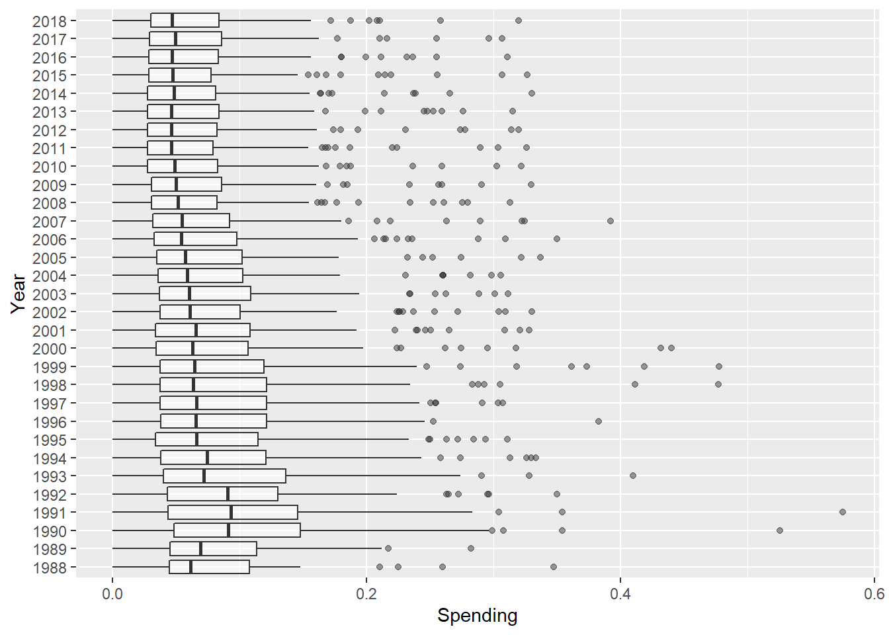

library(readxl)
library(tidyverse)
library(here)
military <- read_xlsx(here::here("supporting_artifacts", "gov_spending_per_capita.xlsx"),
sheet = "Share of Govt. spending",
skip = 7,
n_max = 198)Practice Activity 4
military_clean <- military |>
mutate(across(.cols = everything(), .fns = ~na_if(., ". .")),
across(.cols = everything(), .fns = ~na_if(., "xxx")))military_clean <- military_clean |>
mutate(across(.cols = "1988":"2019", .fns = ~as.numeric(.)))cont_region <- read_xlsx(here::here("supporting_artifacts",
"gov_spending_per_capita.xlsx"),
sheet = "Regional totals",
skip = 14) |>
filter(Region != "World total (including Iraq)",
Region != "World total (excluding Iraq)")
military_clean |>
anti_join(cont_region, by = c("Country" = "Region")) |>
arrange(Country)# A tibble: 183 × 35
Country Notes Repor…¹ `1988` `1989` `1990` `1991` `1992` `1993` `1994`
<chr> <chr> <chr> <dbl> <dbl> <dbl> <dbl> <dbl> <dbl> <dbl>
1 § Figures… <NA> <NA> NA NA NA NA NA NA NA
2 ¶ Figures… <NA> <NA> NA NA NA NA NA NA NA
3 † Figures… <NA> <NA> NA NA NA NA NA NA NA
4 ‡ Figure… <NA> <NA> NA NA NA NA NA NA NA
5 Afghanist… 53 <NA> NA NA NA NA NA NA NA
6 Albania § ¶ … <NA> NA NA NA NA NA NA NA
7 Algeria 1 <NA> NA NA 0.0568 0.0436 0.0745 0.0763 0.101
8 Angola 4 <NA> NA NA NA NA NA NA NA
9 Argentina 36 <NA> NA NA NA NA NA NA NA
10 Armenia † 77 <NA> NA NA NA NA NA NA NA
# … with 173 more rows, 25 more variables: `1995` <dbl>, `1996` <dbl>,
# `1997` <dbl>, `1998` <dbl>, `1999` <dbl>, `2000` <dbl>, `2001` <dbl>,
# `2002` <dbl>, `2003` <dbl>, `2004` <dbl>, `2005` <dbl>, `2006` <dbl>,
# `2007` <dbl>, `2008` <dbl>, `2009` <dbl>, `2010` <dbl>, `2011` <dbl>,
# `2012` <dbl>, `2013` <dbl>, `2014` <dbl>, `2015` <dbl>, `2016` <dbl>,
# `2017` <dbl>, `2018` <dbl>, `2019` <dbl>, and abbreviated variable name
# ¹`Reporting year`Data Organization
military_longer <- military_clean |>
pivot_longer("1988":"2018",
names_to = "Year",
values_to = "Spending")Data Visualization Explanation
military_longer |>
ggplot(mapping = aes(x = Spending, y = Year)) +
geom_boxplot(alpha = 0.5)
order <- military_longer |>
arrange(Spending)